visitors since December 24, 2005
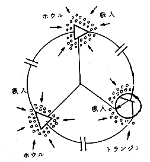
Seike's G-STRAIN Energy
Created on February 26, 1997 - JLN Labs -
Last update : January 5, 2006
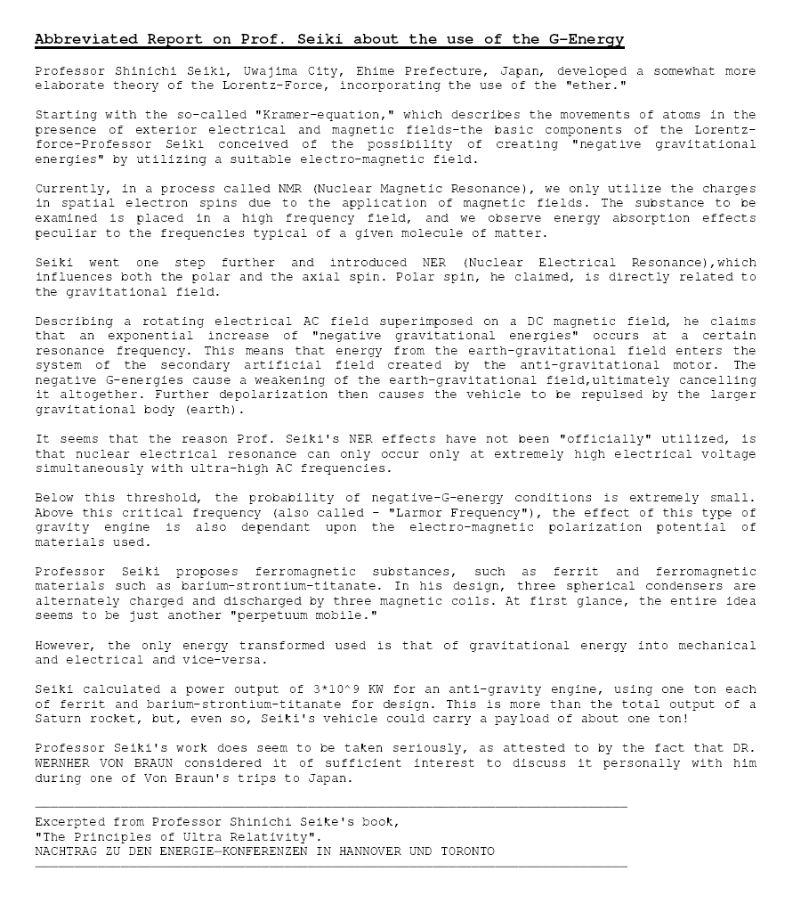
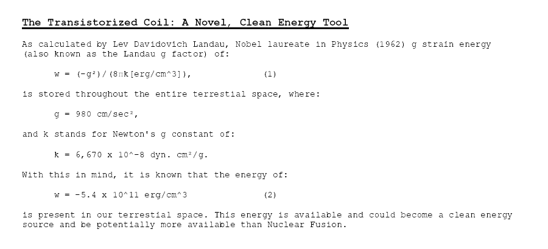
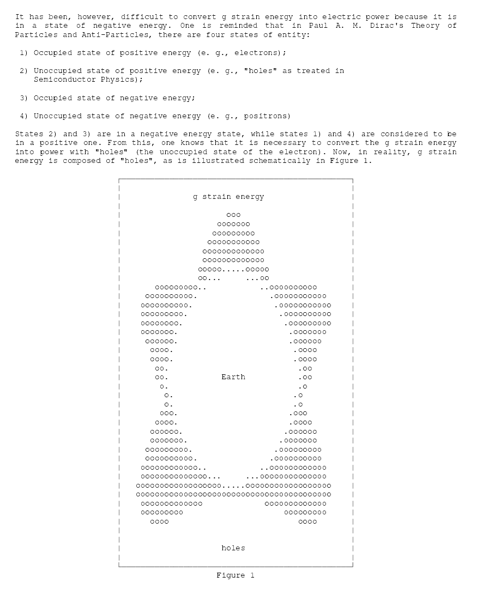
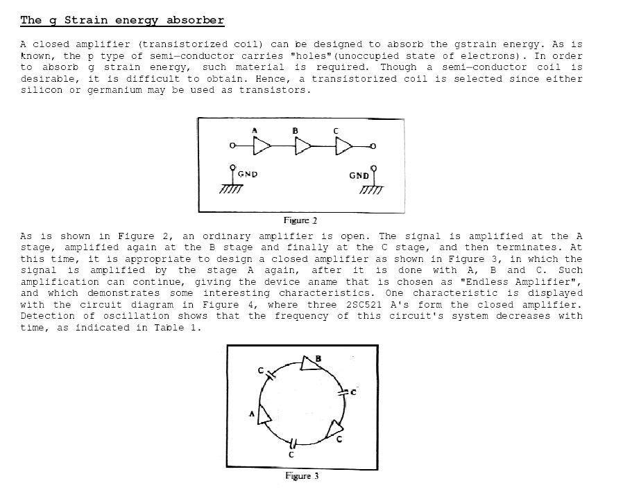
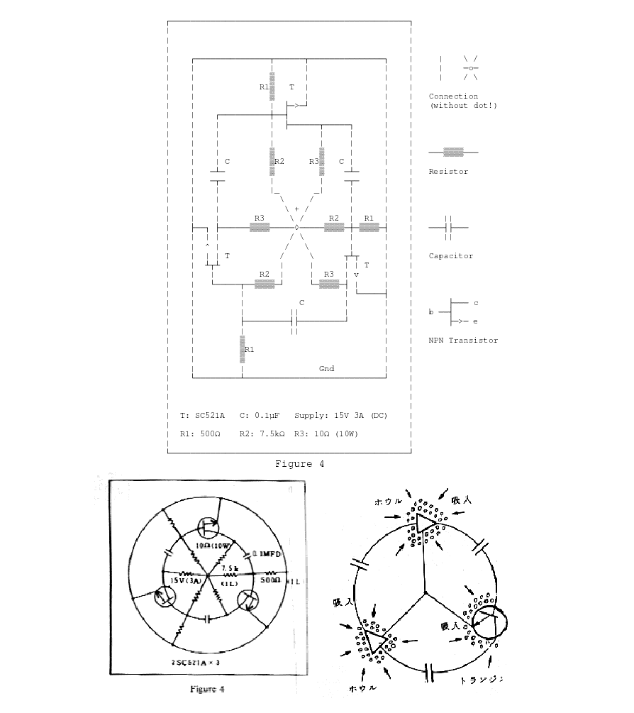
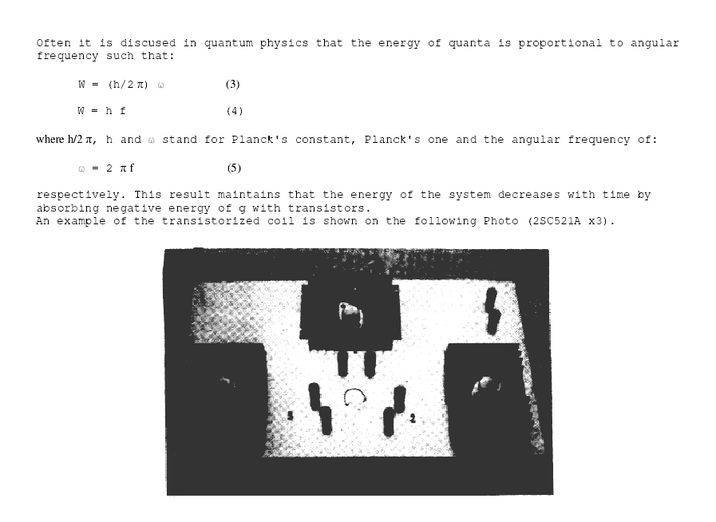
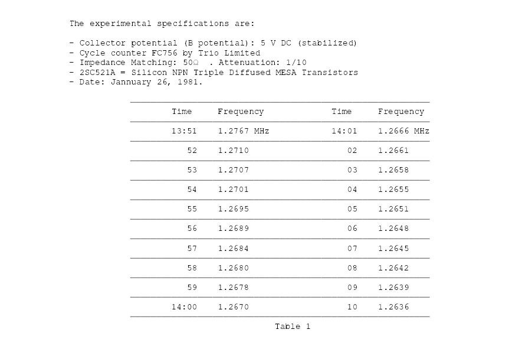
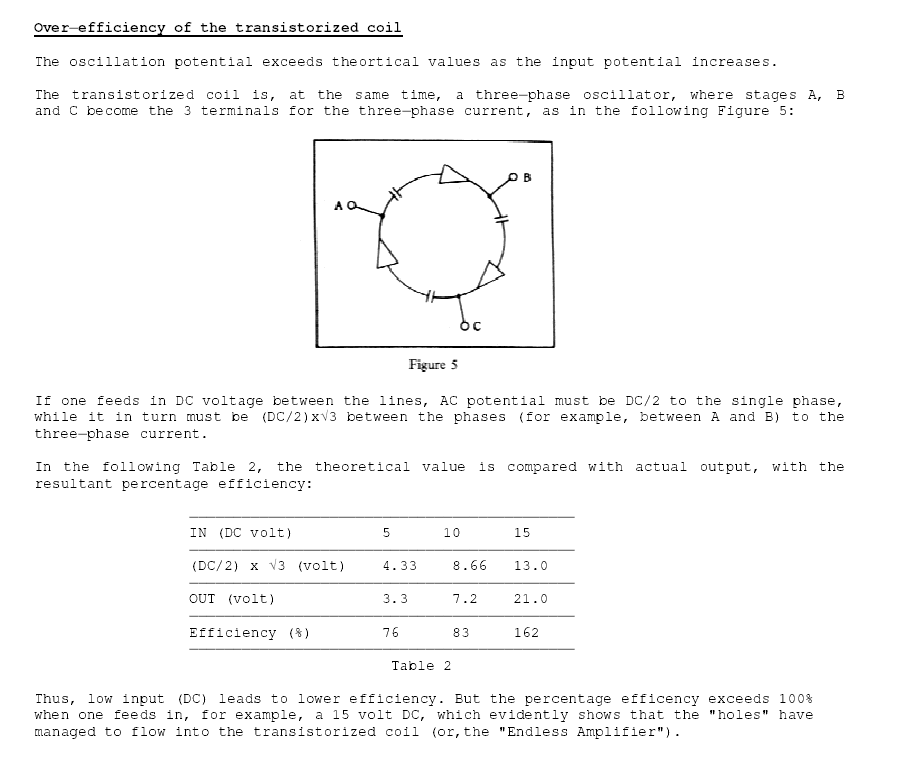
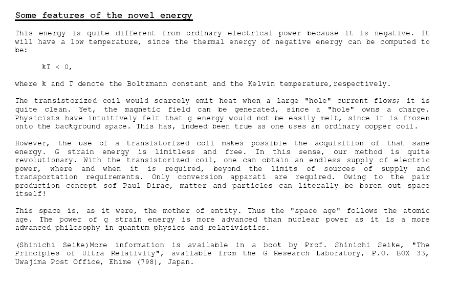
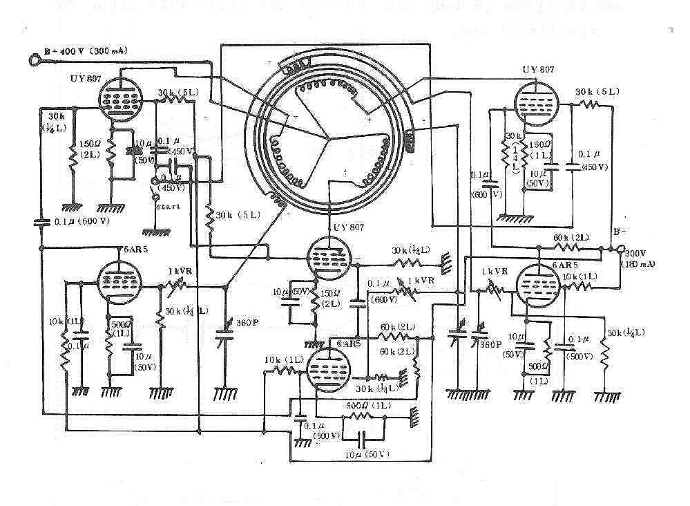
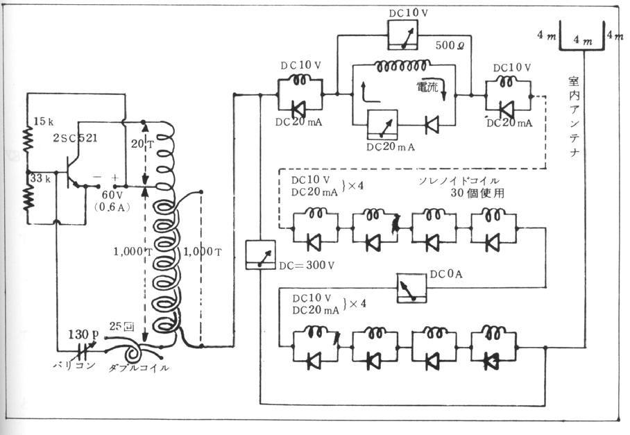
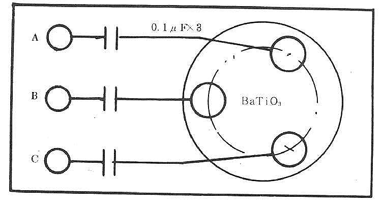
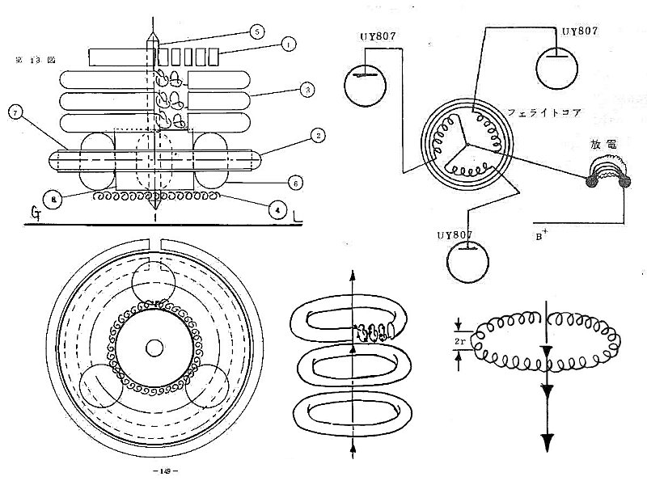
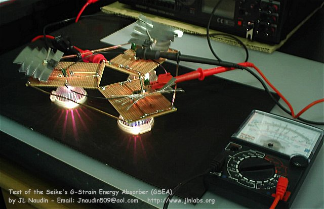
Based on work of Prof. Shinichi
Seike, I have tested his G Strain energy
absorber .
Return to the JLN Labs home page
visitors since December 24, 2005